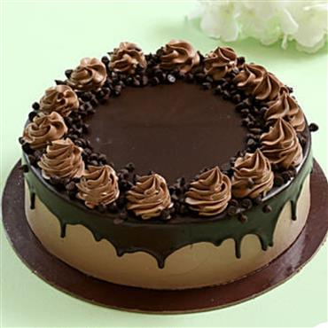

Chocolate Cake Recipe

Triple Chocolate Cake (Popular Recipe!)
With a super moist crumb and fudgy, yet light texture, this
Chocolate Cake Recipe
will soon be your favorite too. Top with chocolate
buttercream
and chocolate chips for 3x the chocolate flavor. You can
also prepare this chocolate layer cake as a sheet cake, too. See
recipe note.
Ingredients
Cake
- 1 and 3/4 cups (219g) all-purpose flour (spooned & leveled)
- 3/4 cup (62g) unsweetened natural cocoa powder
- 1 and 3/4 cups (350g) granulated sugar
- 2 teaspoons baking soda
- 1 teaspoon baking powder
- 1 teaspoon salt
- 2 teaspoons espresso powder (optional)
- 1/2 cup (120ml) vegetable oil (or canola oil or melted coconut oil)
- 2 large eggs, at room temperature
- 2 teaspoons pure vanilla extract
- 1 cup (240ml) buttermilk, at room temperature
- 1 cup (240ml) freshly brewed strong hot coffee (regular or decaf)
Chocolate Buttercream
- 1 and 1/4 cups (282g) unsalted butter, softened to room temperature
- 3 and 1/2 cups (420g) confectioners’ sugar
- 3/4 cup (65g) unsweetened cocoa powder (natural or dutch process)
- 3/4 cup (65g) unsweetened cocoa powder (natural or dutch process)
- 1/4 teaspoon salt
- 1 teaspoon pure vanilla extract
- optional for decoration: semi-sweet chocolate chips
Instructions
- Preheat oven to 350°F (177°C). Grease two 9-inch cake pans, line with
parchment paper rounds, then grease the parchment paper. Parchment
paper helps the cakes seamlessly release from the pans. (If it’s
helpful, see this parchment paper rounds for cakes video & post.)
- Make the cake:Whisk the flour, cocoa powder, sugar, baking soda, baking
powder, salt, and espresso powder (if using) together in a large bowl.
Set aside. Using a handheld or stand mixer fitted with a whisk attachment
(or you can use a whisk) mix the oil, eggs, and vanilla together on
medium-high speed until combined. Add the buttermilk and mix until
combined. Pour the wet ingredients into the dry ingredients, add
the hot
water/coffee, and whisk or beat on low speed until the
batter is completely combined. Batter is thin.
- Divide batter evenly between pans. Bake for 23-26 minutes or until a
toothpick inserted in the center comes out clean. Baking times vary, so
keep an eye on yours. The cakes are done when a toothpick inserted in
the center comes out clean. (Note: Even if they’re completely done, the
cooled cakes may *slightly* sink in the center. Cocoa powder is simply
not as structurally strong as all-purpose flour and can’t hold up to all
the moisture necessary to make a moist tasting chocolate cake. It’s normal!)
- Remove the cakes from the oven and set on a wire rack. Allow to cool completely
in the pan.
- Make the buttercream: With a handheld or stand mixer fitted with a paddle attachment,
beat the butter on medium speed until creamy—about
2 minutes. Add confectioners’
sugar, cocoa powder, 3 Tablespoons heavy cream, salt, and vanilla extract. Beat on
low speed for 30 seconds,
then increase to high speed and beat for 1 full minute.
Do not over-whip. Add 1/4 cup more confectioners’ sugar or cocoa powder if frosting
is
too thin or 1-2 more Tablespoons of cream if frosting is too thick. (I usually add
1 more.) Taste. Add another pinch of salt if desired.
- Assemble and frost: If cooled cakes are domed on top, use a large serrated knife to
slice a thin layer off the tops to create a flat surface. This is
called “leveling”
the cakes. Discard or crumble over finished cake. Place 1 cake layer on your cake
stand or serving plate. Evenly cover the top
with frosting. Top with 2nd layer and
spread remaining frosting all over the top and sides. I always use an icing spatula
and bench scraper for the
frosting. Garnish with chocolate chips, if desired.
- Refrigerate uncovered cake for at least 30-60 minutes before slicing to help set the
shape. After that, you can serve the cake or continue
refrigerating for up to 4–6
hours before serving. Cake can be served at room temperature or chilled.